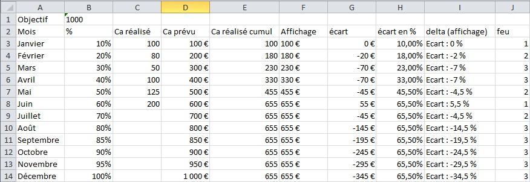
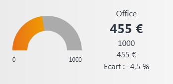
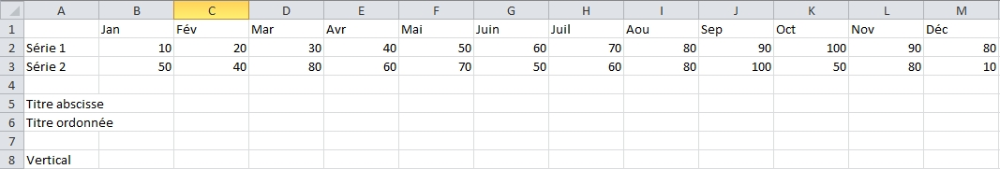
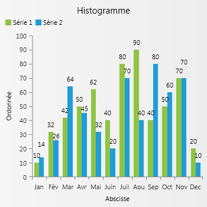

Le widget Office permet à un utilisateur de créer son indicateur à l'aide d'un tableau (Excel ou LibreOffice). Aucune compétence de développement n'est requise.
Il peut être associé aux widgets de type Feu et Jauge ainsi qu'aux widgets de type Graphique.
Il permet également de lire un fichier texte contenant les balises Hmp correspondant aux widgets de type Feu, Jauge et Graphique.
Paramétrage du widget
Lors de la création du widget dans le Zoom des widgets, il convient de choisir le type de widget Feu, Jauge ou Graphique.
|
Paramètre |
Valeur |
|
Module |
ModuleOffice.dhop |
|
Fonction d'initialisation |
InitOffice |
|
Fonction de mise à jour |
UpdateOffice |
C'est dans la zone "Paramètres" qu'il faut renseigner les informations concernant le fichier Office à traiter. C'est une chaîne au format HMP :
Pour un indicateur de type Feu ou Jauge
|
Paramètre |
Description |
Type |
|
<OfficeType> (ou <TypeOffice>) |
Indique le type de widget à traiter
|
Alpha |
|
<File> (ou <Fichier>) |
Indique le fichier Office à traiter. Il doit se trouver dans le répertoire des fichiers joints de l'application "COMMUN". Ici, le mot clé "$user" sera remplacé par le code utilisateur Divalto |
Alpha |
|
<FileText> (ou <FichierTexte>) |
Fichier texte avec les valeurs des balises du widget Feu ou Jauge. |
Alpha |
|
<Sheet> (ou <Feuille>) (Facultatif) |
Nom de la feuille dans le document Office |
Alpha |
|
<Min> |
Valeur minimale |
Numérique |
|
<MinCell> (ou <CelluleMin>) |
Cellule contenant la valeur minimale |
Alpha |
|
<Max> |
Valeur maximale |
Numérique |
|
<MaxCell> (ou <CelluleMax>) |
Cellule contenant la valeur maximale |
Alpha |
|
<CurrentCell> (ou CelluleCourante>) |
Cellule contenant la valeur courante |
Alpha |
|
<StateCell> (ou <CelluleEtat>) |
Cellule avec la couleur (couleur du widget Feu) |
Numérique |
|
<SpreadValueCell> (ou <CelluleValeurEcart>) (Facultatif) |
Cellule avec l'écart par rapport à l'objectif |
Alpha |
|
<CurrentValueCell> (ou <CelluleValeurCourante>) (Facultatif) |
Cellule avec la valeur courante formatée pour l'affichage. Par défaut, c'est <CurrentCell> qui est affichée. |
Alpha |
|
<Text> (ou <Texte>) (Facultatif) |
Titre du widget |
Alpha |
|
<TextCell> (ou <CelluleTexte>) (Faculatif) |
Cellule contenant le titre du widget |
|
Pour un graphique
|
Paramètre |
Description |
Type |
|
<OfficeType> (ou <TypeOffice>) |
Indique le type de widget à traiter
|
Alpha |
|
<File> (ou <Fichier>) |
Indique le fichier Office à traiter. Il doit se trouver dans le répertoire des fichiers joints de l'application "COMMUN". Ici, le mot clé "$user" sera remplacé par le code utilisateur Divalto |
Alpha |
|
<FileText> (ou <FichierTexte>) |
Fichier texte avec les valeurs des balises du widget Feu ou Jauge. |
Alpha |
|
<Sheet> (ou <Feuille>) (Facultatif) |
Nom de la feuille dans le document Office |
Alpha |
|
<ChartType> (ou <TypeGraphique>) |
Type de graphique
|
Alpha |
|
<ChartTypeCell> (ou <CelluleTypeGraphique>) |
Cellule contenant le type de graphique |
Alpha |
|
<VerticalAxisTitleCell> (ou <CelluleTitreAxeVertical>) (Facultatif) |
Cellule contenant le titre de l'axe vertical |
Alpha |
|
<VerticalAxisTitle> (ou <TitreAxeVertical>) (Facultatif) |
Titre de l'axe vertical |
Alpha |
|
<HorizontalAxisTitleCell> (ou <CelluleTitreAxeHorizontal>) (Facultatif) |
Cellule contenant le titre de l'axe horizontal |
Alpha |
|
<HorizontalAxisTitle> (ou <TitreAxeHorizontal>) (Facultatif) |
Titre de l'axe horizontal |
Alpha |
|
<ShowLegendCell> (ou <CelluleAfficherLegende>) (Facultatif) |
Cellule indiquant s'il faut afficher la légende (0/1) |
Alpha |
|
<ShowLegend> (ou <AfficherLegende>) (Facultatif) |
Afficher la légende (0/1) |
Alpha |
|
<PaletteCell> (ou <CellulePalette>) (Facultatif) |
Cellule contenant le nom de la palette de couleur à utiliser |
Alpha |
|
<Palette> (Faculatif) |
Palette de couleur à utiliser |
Alpha |
|
<OrientationCell> (ou <CelulleOrientation>) (Facultatif) |
Cellule contenant l'orientation du graphique (utilisé seulement pour le type Bar (histrogramme)
|
Alpha |
|
<Orientation> (Facultatif) |
Orientation du graphique (utilisé seulement pour le type Bar (histogramme)) |
Alpha |
|
<AbscissaRange> (ou <PlageAbscisse>) |
Plage de données représentant les valeurs de l'abscisse |
Alpha |
|
<SerieNameCell> (ou <CelluleNomSerie>) |
Cellule contenant le nom de la série |
Alpha |
|
<SerieName> (ou <NomSerie>) |
Nom de la série |
Alpha |
|
<SerieRange> (ou <PlageSerie>) |
Plage des valeurs de la série |
Alpha |
|
<Text> (ou <Texte>) (Facultatif) |
Titre du widget |
Alpha |
|
<TextCell> (ou <CelluleTexte>) (Faculatif) |
Cellule contenant le titre du widget |
Alpha |
Si c'est l'attribut <FileText> qui est utilisé, le fichier texte doit contenir les balises des widgets Feu / Jauge, ou alors les balises du widget Graphique.
Adressage d'une cellule
Adresser une cellule
On peut adresser une cellule selon 3 formats :
|
Référence |
Commentaire |
|
[feuille:]A:1 |
Colonne Alpha et ligne
Ex : B:10 AA:142 |
|
[feuille:]L1:C1 |
Ligne et colonne numérique
Ex : 1:1 10:50 |
|
Nom |
Cellule nommée
Ex : ObjectifCA |
Formule
La référence à une cellule peut être une expression. C'est le numéro de la cellule, suivi éventuellement d'un calcul.
Le numéro de la cellule est évalué par la fonction DataCompute du langage Diva. On peut donc utiliser dans la formule toutes les fonctions du langage Diva évaluable par DataCompute, ainsi que les données des enregistrements publics visibles dans le module WidgetOffice.dhop (par exemple MZ.DOS).
Mots clés substitués lors de l'exécution
|
Mot clé |
Commentaire |
|
Day |
Jour du mois courant |
|
Month |
Mois de l'année courante |
|
Year |
Année courante |
|
NumWeek |
Numéro de la semaine courante |
|
DayWeek |
Numéro du jour de la semaine courante |
|
NumDay |
Numéro du jour dans l'année courante |
Exemple
3.1. Widget Feu / Jauge
Pour le tableur ci-dessous :

<file>planmarche.xlsx
<sheet>feuil1
<min>0
<maxcell>objectif
<currentCell>e:2+month
<StateCell>2+month:10
<CurrentValueCell>f:2+month
<SpreadValueCell>2+Month:9
Dans cet exemple, on utilise une cellule nommée pour la cellule contenant la valeur maximale, l'écriture A:1 pour CurrentCell et CurrentValueCell, l'écriture L1:C1 pour StateCell et SpreadValueCell.
Il y a aussi un exemple d'utilisation de formule.
Pour une exécution au mois de mai, on obtient :

Sous la jauge, ce sont les valeurs minimales et maximales.
Sur la droite, on a le nom du widget, la valeur courante (ici, c'est CurrentValueCell -colonne F- qui est utilisée car le paramètre a été renseigné (valeur courante sinon -colonne E-)), l'objectif (valeur maximale) et l'écart (colonne I).
Enfin, la couleur de la jauge provient de la colonne J.
3.2. Widget Graphique
Pour le tableau ci-dessous :

<File>graphique.xlsx
<OfficeType>chart
<ChartType>bar
<verticalaxistitle>ordonnée
<horizontalaxistitle>abscisse
<AfficherLegende>1
<AbscissaRange>b:1;m:1
<SerieName>Série1
<SerieRange>b:2;m:2
<SerieName>Série 2
<SerieRange>b:3;m:3
<OrientationCell>a:8
<Palette>Windows8
On obtient :

Performance, cache
Pour ne pas charger Office ou OpenOffice pour chaque widget de chaque utilisateur, ce qui pourrait dégrader les performances du serveur et ralentir le chargement de l'interface d'accueil, le résultat de chaque widget est stocké dans un fichier texte.
Ce fichier texte est stocké dans le sous-répertoire Widget du répertoire où se trouve le fichier Office. Il porte le nom de l'identifiant unique du widget.
Il contient éventuellement une date d'expiration. En effet, si les formules de calcul des cellules contiennent par exemple une référence au jour de la semaine, le fichier a une durée de vie d'un seul jour.
Le fichier texte est créé après le premier accès au fichier Office. Le module stocke le résultat dans le fichier texte.
A l'ouverture d'un fichier Office, le module regarde :
s'il existe un fichier texte correspondant ;
si le fichier texte est encore pérenne ;
si le fichier texte a la même date que le fichier Office.
Dans ce cas, c'est le contenu du fichier texte qui sera utilisé.
Sinon, le module recalcule le résultat à partir du fichier Office, calcule la nouvelle date d'expiration puis stocke le résultat dans le fichier texte.